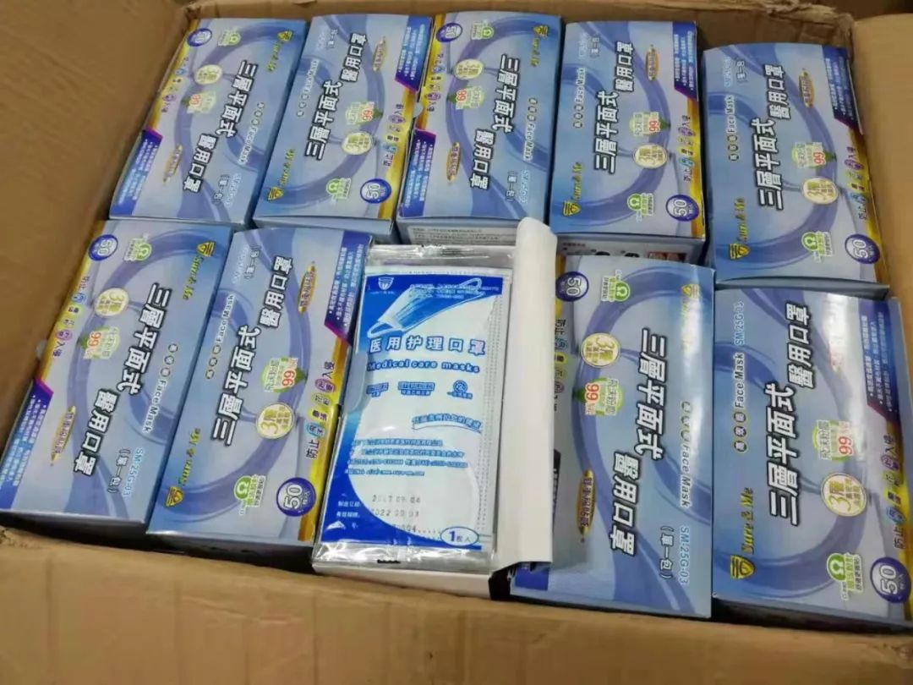

捐赠物资“直达”武汉目标医院的另类样本：百万粉丝博主倒逼物流改变收件目的地 - 经济观察网 － 专业财经新闻网站
原文链接 备份链接 经济观察网 记者 洪小棠 随着疫情防控工作的持续开展，医疗物资紧缺一直伴随着一线医护人员的救治工作，一面是社会各界捐赠的物资源源不断的涌入武汉，另一面是武汉的发热患者定点医院却依旧向社会发出求援消息，引起舆论关注。 经 …

记者 | 张峰 编辑 | 沈小山
1月31日，何晓丽发现“北京王洋全球影迷会”定向捐赠给湖北麻城市人民医院的2000个一次性医用口罩被麻城市红十字会“拒收”了。

根据快递单号显示，这批1月26日从广东江门顺丰寄出的物资在1月31日8点42到达麻城市麻城营业点，9点09分由快递员派送，收件人为麻城市红十字会主任张仁波。
根据快递员郑先生的说法，当天上午麻城市新型冠状病毒肺炎指挥中心的一位工作人员到达营业点后，因为这批物资没有提前预付邮费，是“到付”，表示“没有办法报销。”只能先堆放在快递公司仓库。一般这种情况，郑先生表示会做拒收处理，退还货物。
何晓丽说，因为是特殊时期，并且运送的为疫情紧缺物资，供货方和她考虑为了保障货物安全到达，选择了到付的方式。
而麻城市红十字会主任张仁波在接受南都周刊记者采访时表示，并不存在拒收物资现象。由于近日接收物资频繁，上午由自己的同事进行接收该批2000个口罩的物资，因为工作人员“工作失误”导致产生误会，已经在31日下午四点左右进行了物资接受，并向捐赠人道歉。
至于工作人员是否提到“拒收是因为无法报销”，张仁波表示并不清楚。
最终，经过近六个小时的协商沟通，这笔179元的运费由捐赠方承担，物资由麻城市红十字会接收。在签收时，又出现了小插曲，红十字会发出的捐赠函中，原本的2000个口罩被写成了“20000只。”
事后张主任在接受采访时表示，是“入库的工作人员失误写错，已经纠正。”
在“拒收”事件中，何晓丽提到，最开始捐赠方希望直接捐赠至求助医院麻城市人民医院，但是院方表示需要由红十字会调配，于是，接收地址临时改为了麻城市红十字会。
张仁波表示，所有捐赠至麻城市的物资，不论是定向捐赠还是普通捐赠，都需要统一寄送到麻城市红十字会统一调配。
并且此次疫情获得物资自己无权调配。麻城市建立了防疫防控指挥部，物资由副指挥长签字审批，并由麻城市物资保障组副组长签字，红十字会工作人员通知相应单位，并发放“取库单”，一般头天到达的物资，第二天会发放，紧急物资会尽快发放。对于定向捐赠的物资，原则上最大程度遵循捐赠者意愿，如果出现剩余，剩余物资将分配到其他医院。
晚7点30分，何晓丽终于收到了麻城市人民医院的消息，物资已经全部到达医院。

今天上午麻城市民政局回复称：事件中麻城市红十字会的两位直接经手人已经被撤职查办，麻城市纪委也介入调查，防疫指挥部在下午召开专题会议进行整改。
（应受访者要求，文中何晓丽为化名。）
来源｜南都周刊
END
欢迎分享到朋友圈，如想取得授权请邮件：newmedia@nbweekly.com。如果想找到小南，可以在后台回复「小南」试试看哦~

文章已于修改
原文链接 备份链接 经济观察网 记者 洪小棠 随着疫情防控工作的持续开展，医疗物资紧缺一直伴随着一线医护人员的救治工作，一面是社会各界捐赠的物资源源不断的涌入武汉，另一面是武汉的发热患者定点医院却依旧向社会发出求援消息，引起舆论关注。 经 …
原文链接 备份链接 国内外的口罩都在送往武汉，可武汉医院的不仅缺口罩，甚至即将用完。人民日报在其官微发问：究竟是物资紧缺还是物资分配环节存在问题？ 截止到目前，协和医院收到的物资全部来自企业和个人捐赠。物资直接对接到各地疫情指挥部或是各 …
原文链接 备份链接 【财新网】（记者 钱童）一面是全球企业和机构各类物资支援，一面是医院领不到物资公开向社会求援，防疫物资到底在哪里？多位工厂、捐赠和采购方人士告诉财新记者，目前确实面临瓶颈：国内生产或者捐赠的物资被接管，统一调配，多有 …
原文链接 备份链接 01.02.2020本文字数：3601，阅读时长大约6分钟 导读：关于一线医院防护物资紧缺的消息满天飞，湖北省红十字会、武汉红十字会物资分配效率和公平性问题引发质疑。 作者 | 第一财经 李澄晚 1月31日下午，涂先 …
原文链接 备份链接 海内外源源不断捐赠武汉，各大医院仍全面告急。被指定接收捐赠物资的主要机构湖北省与武汉市红十字会系统成为众矢之的，他们原本应该为重大突发事件做好准备，却一开始就因专业能力不足遭遇了信任危机。 本刊记者探访了武汉红十字会位 …